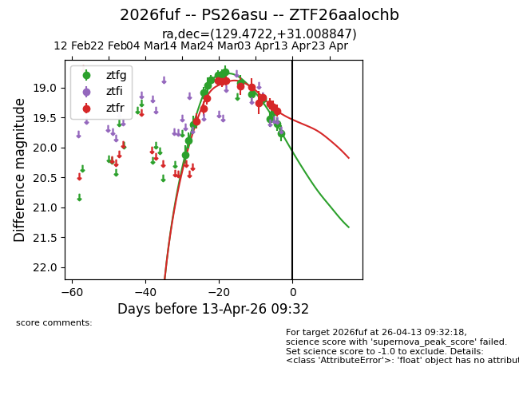
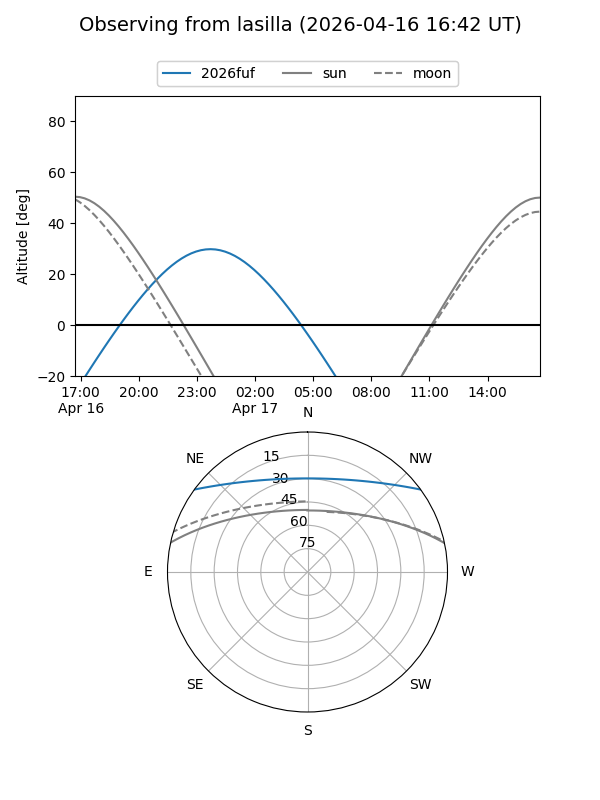
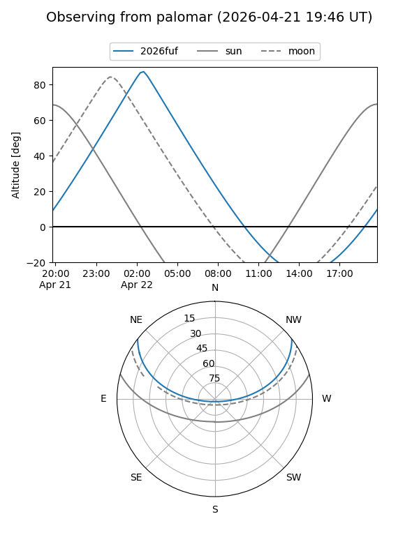
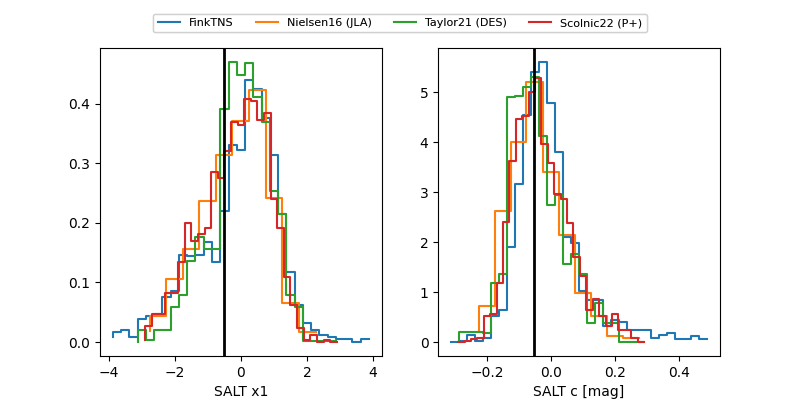

2026fuf
Target 2026fuf at 2026-04-13 09:44
Aliases and brokers:
FINK: link
Lasair: link
ALeRCE: link
TNS: link
YSE: link
alt names
ZTF26aalochb (ztf,fink_ztf)
2026fuf (tns,yse)
PS26asu (panstarrs)
Coordinates:
equatorial (ra, dec) = 129.4722,+31.00885
equatorial (HMS+DMS) = 08:37:53.33,+31:00:31.85
galactic (l, b) = (192.6340,+35.21250)
Flags:
Photometry:
last ztfg=19.76, ztfr=19.38
16 ztfg, 13 ztfr detections
Lightcurve

Visibility


Additional plots
